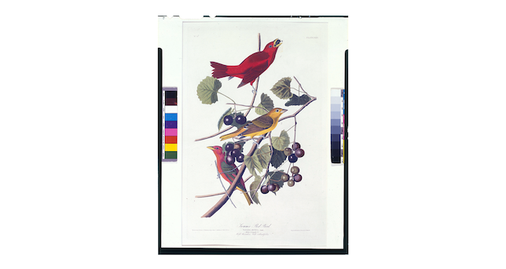
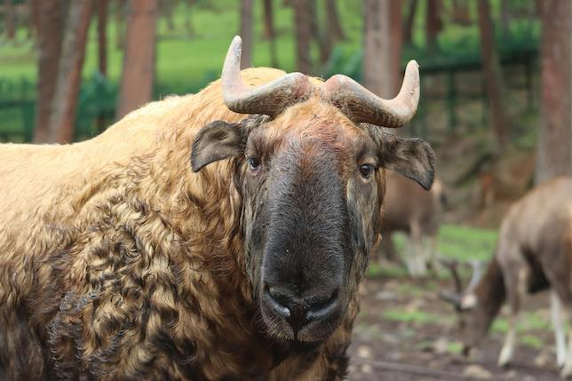
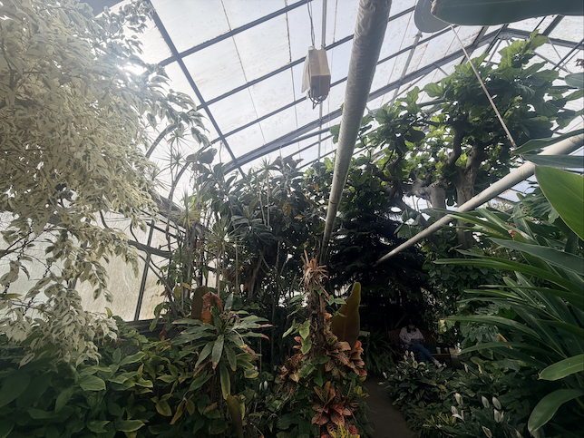

I chose this photo because I liked the simple composition of the drawing. I also like birds.

I chose this photo because I thought the direct eye contact with the camera felt very personal. The photo spoke to me.

This photo is of my favorite spot on campus, the Durfee Conservatory. I go there frequently to unwind.
